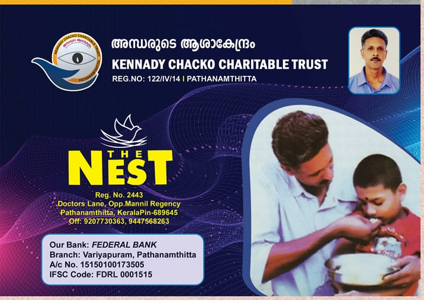

Listen to this, dear ones.
Our "THE NEST" is a humble orphanage operating in Pathanamthitta with the help and cooperation of wellwishers.
KENNADY CHACKO CHARITABLE TRUST, which runs this institution, has an NGO license of the central government as well as the 12A, 80G licenses of the state government.- THE NEST orphanage is now home to many blind, cancer patients
in different conditions (34 people). We are not asking to be paid for looking after them. The trust is authorized
to receive donations from any person in India even on a monthly basis.
This organisation does not exclude anyone on the basis of caste, religion, class or politics. Those who work in this
trust are all volunteers. Currently we have a Chairman, Manager, Supervisor, Nursing, Kitchen Work and Cleaning and more at the orphanage
. Except the chairman(Kennady Chacko), we would like to extend at least a small salary to all those working.
No financial support has been received from the government till date. The only support might be the civil ration supplies Rice (1kg-5.65Rs) and wheat (1kg -4.65Rs). Even these are not free
We are in a financial crisis now. We need your help. ..Please help. ... a rupee you give will never go waste.
Pay at least one rupee from your savings to meet the needs of the needy - this is the mercy you show to the poor....
... there is no concept of making money here...no one wants to get rich here..

Trust President
"The Nest" Founder & Chairman

Trust secretary
9207730363


{kind=link}
{kind=link}
{kind=link}
{kind=link}